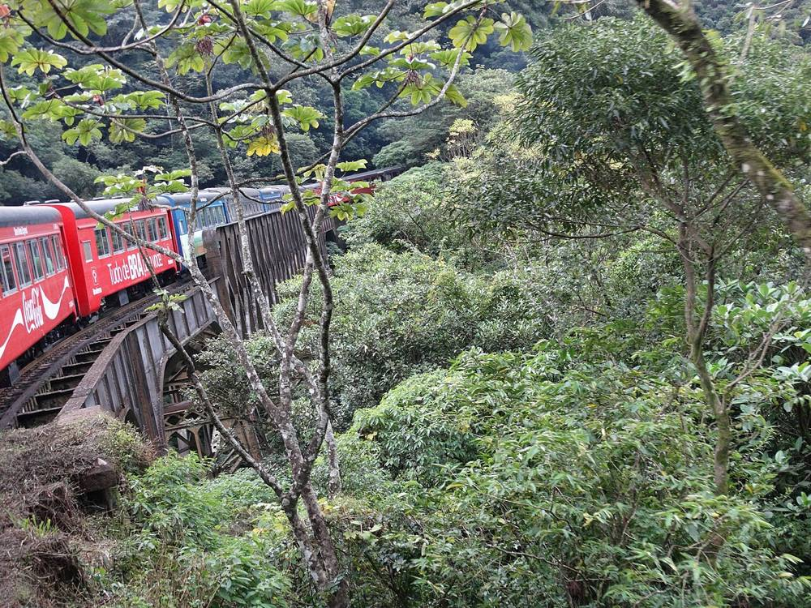

Paraná · Serra do MarCuritiba → Morretes de trem
Embarque em uma aventura inesquecível pela Mata Atlântica. O trem desce a Serra do Mar por túneis, pontes e viadutos centenários, com cachoeiras e mirantes de tirar o fôlego — até a charmosa cidade histórica de Morretes, terra do famoso barreado.
- 🚆 Passeio de trem pela Serra do Mar
- 🌿 Paisagens da Mata Atlântica
- 🏘️ Tempo livre no centro histórico de Morretes
- 🍲 Dica do barreado, prato típico da região
- 🚌 Transporte de ida e volta com a LICE TURISMO
a partir de R$ 290
Quero reservar